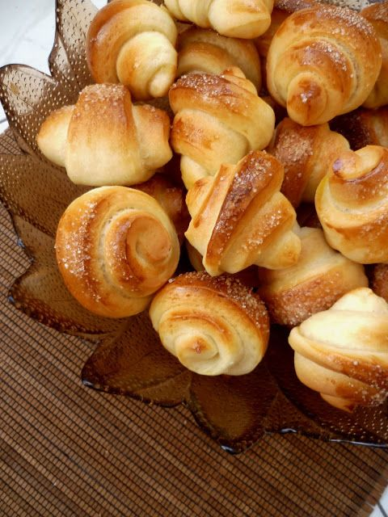

Булочки "Вкусняшки"

Описание
Самые быстрые и сладкие булочки! Те самые булочки из детства -
это воспоминания о тепле и счастье, которые связаны
с ароматом свежей сдобы.
Список продуктов
| Наименование |
Количество |
| Мука |
3 ст.л. + ещё 4 стакана |
| Сахар |
2 ст.л. |
| Дрожжи прессованные |
50 грамм |
| Вода |
1,5 стакана |
| Растительное масло |
0,5 стакана |
| Ванилин |
по вкусу |
| Соль |
0,5 ч.л. |
Пошаговый рецепт
Все, что понадобится, чтобы приготовить булочки из детства "Вкусняшки"!
Точно следуйте по рецепту и вы получите вкусные булочки!
- Дрожжи растворяем в теплой воде.
- Добавляем сахар.
- Затем добавляем 3 ложки муки.
- Перемешиваем и оставляем на 15 минут.
- Когда пройдет 15 минут, добавляем остальные ингредиенты - растительное масло, ванилин.
Добавляем муку, сколько возьмет тесто.
- Получается вот такое тесто.
- Разрезаем тесто на две части.
- Раскатываем в квадрат.
- Натираем тесто растительным маслом, а затем присыпаем сахаром.
- Сворачиваем в рулет.
- Затем разрезаем на булочки.
- Каждую защипляем снизу и обмакиваем верхушкой в сахар.
- Даем расстояться, а затем ставим выпекать. При 180 градусах на 20 минут.